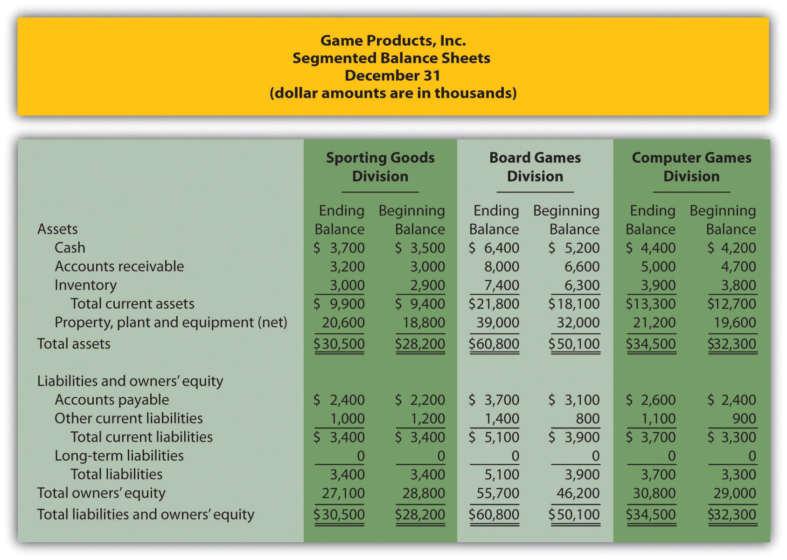
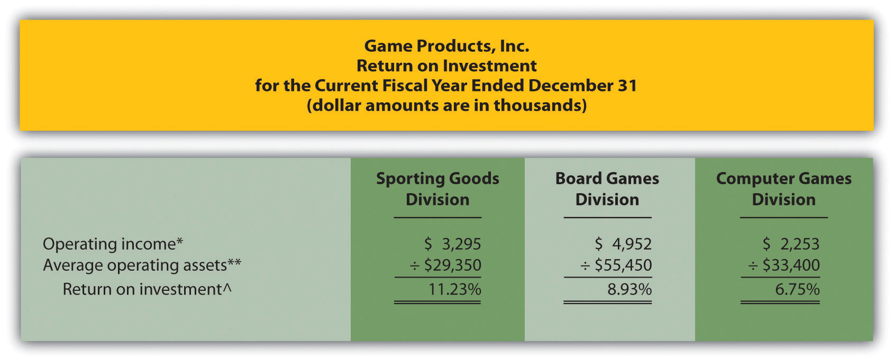
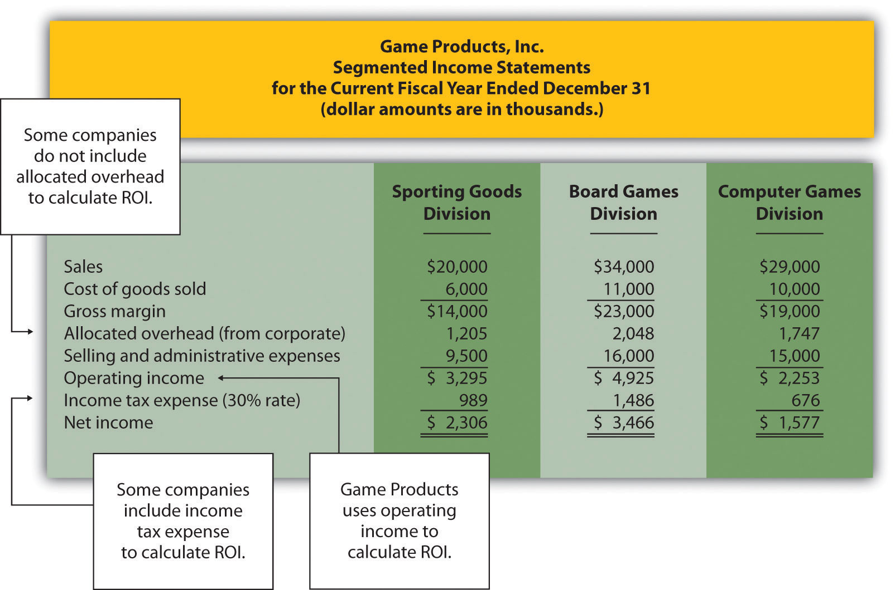
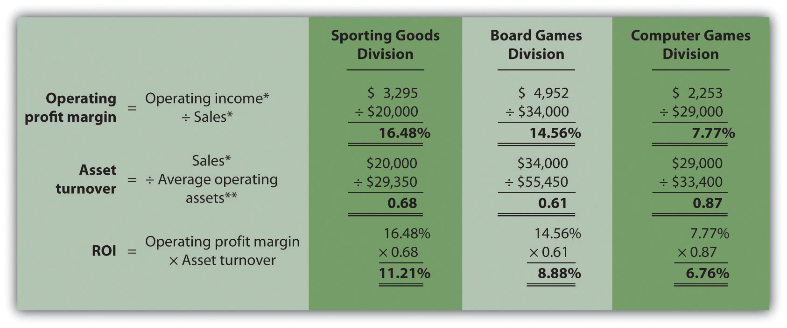

Question: Perhaps the most common measure of performance for managers responsible for investment centers is return on investment (ROI). What is ROI, and how is it used to evaluate investment centers?
Answer: ROIOperating income divided by average operating assets. is defined as operating income divided by average operating assets:
Note that different organizations use different measures to calculate ROI. Our goal in this discussion is to introduce one common approach, but keep in mind that organizations often make adjustments to this formula to better suit their needs.
The advantage of ROI as a performance measure is that it includes the use of assets. For example, assume 2 divisions have $10,000 in operating income. Both divisions appear to have performed equally well based on operating income. However, further review shows that Division 1 invested $200,000 in average operating assets to produce this income while Division 2 invested $400,000. Clearly, the division that invested half the amount in assets to produce the same amount of income had the best performance of the two. Comparing the ROI for each division proves this:
Let’s take a closer look at the components of the ROI calculation, operating income and average operating assets.
Question: What is operating income, and how does it differ from net income?
Answer: Operating incomeIncome produced by the division related to its daily activities; it typically excludes items, such as income tax expense, interest income, interest expense, and unusual gains or losses. is the income produced by the division from its daily activities. It excludes items used in the calculation of net income, such as income tax expense, interest income, interest expense, and any unusual gains or losses. The focus is on how well the division performed relative to its core business operations, which does not include one-time gains or losses from the sale of property, plant, and equipment for example.
Question: What are average operating assets, and how is this amount calculated?
Answer: Average operating assetsAssets the division has in place to run the daily operations of the business; it is calculated using operating asset information as follows: (Beginning period balances + Ending period balances) ÷ 2. are the assets that the division has in place to run the daily operations of the business, and this value is calculated by adding beginning period balances and ending period balances and dividing by two. Examples of operating assets include cash, accounts receivable, prepaid assets, buildings, and equipment. As long as the division uses the assets to produce operating income, they are included in the operating assets category. Examples of nonoperating assets—assets not included in this calculation—include land held for investment purposes and office buildings leased to other companies.
An average of operating assets is taken over the period being evaluated for two reasons. First, operating assets are often purchased and sold during an accounting period, and simply taking the ending balance might produce distorted, if not inaccurate, results. Second, operating income represents information for a period of time (income statements always present information for a period of time), while operating assets are presented at a point in time (balance sheets always present information for a point in time). If both of these items are to be included in one ratio (ROI), it is best to use average balance information for balance sheet items. In fact, if the information is readily available, it would be best to take an average of daily operating asset balances for the period being evaluated.
Question: Using ROI as the measure, how do the divisions at Game Products, Inc., compare with each other?
Answer: Figure 11.3 "Segmented Income Statements (Game Products, Inc.)" shows segmented income statement information for each of Game Products’ three divisions. The operating income line of this income statement provides information needed for the numerator of the ROI calculation. Figure 11.4 "Segmented Balance Sheets (Game Products, Inc.)" presents the segmented balance sheets for each division needed to calculate average operating assets.
Figure 11.4 Segmented Balance Sheets (Game Products, Inc.)
Let’s see how each division ranks using ROI. Assume all assets at Game Products, Inc., are operating assets. We use the information in Figure 11.3 "Segmented Income Statements (Game Products, Inc.)" and Figure 11.4 "Segmented Balance Sheets (Game Products, Inc.)" to calculate the ROI for each division in Figure 11.5 "ROI Calculations (Game Products, Inc.)".
Figure 11.5 ROI Calculations (Game Products, Inc.)
*Operating income amount is from segmented income statements presented in Figure 11.3 "Segmented Income Statements (Game Products, Inc.)".
**Average operating assets are calculated using the balance sheet information in Figure 11.4 "Segmented Balance Sheets (Game Products, Inc.)". Since all assets at Game Products, Inc., are operating assets, total asset amounts are used in this calculation. The calculation of average operating assets for each division is (Beginning balance of total assets + Ending balance of total assets) ÷ 2. Average operating assets for the Sporting Goods division is $29,350 (= [$30,500 + $28,200] ÷ 2).
^ROI = Operating income ÷ Average operating assets. For Sporting Goods division, 11.23 percent = $3,295 ÷ $29,350.
The ROI measures presented in Figure 11.5 "ROI Calculations (Game Products, Inc.)" show that although the Board Games division has the highest operating income, its ROI ranks in the middle of the three divisions. The Sporting Goods division has the highest ROI at 11.23 percent, Board Games is second at 8.93 percent, and Computer Games is the lowest at 6.75 percent. Since managers of each division are responsible for maximizing profit based on investments they make in assets, ROI is a reasonable approach to evaluating each manager. The Sporting Goods division manager appears to be outperforming the other two managers based on this measure.
Like most financial measures of performance, ROI can be calculated in several different ways. The components of this calculation often vary from one organization to the next. These variations are discussed next.
Question: For the purposes of the Game Products, Inc., example, we use the same definition of operating income that is used for financial reporting purposes in accordance with U.S. GAAP. However, organizations often create their own unique calculation of operating income for internal evaluation purposes. How might the internal calculation of operating income vary from U.S. GAAP?
Answer: There are several variations that organizations use when calculating operating income. Two of the more common variations are discussed next.
The segmented income statements for Game Products, Inc., are presented again in Figure 11.6 "Segmented Income Statements (Game Products, Inc.)" (these are the same segmented income statements as in Figure 11.3 "Segmented Income Statements (Game Products, Inc.)"). Notice the expense line item labeled allocated overhead (from corporate). Although we include this expense in calculating operating income, many organizations do not, particularly if division managers have no control over allocated overhead. Excluding allocated overhead has the effect of increasing ROI for each division manager and holds each division manager responsible only for expense amounts that are controllable.
Figure 11.6 Segmented Income Statements (Game Products, Inc.)
Review Figure 11.6 "Segmented Income Statements (Game Products, Inc.)" and notice the line item labeled income tax expense. Although we do not include income tax expense in the operating income calculation, some organizations prefer to include this item. Including after-tax expense reduces ROI for each division manager (assuming each division is profitable).
The point here is that the needs of management determine how to define operating income. We will use the U.S. GAAP definition, presented as operating income in Figure 11.6 "Segmented Income Statements (Game Products, Inc.)", throughout this chapter unless indicated otherwise.
Question: For Game Products, Inc., we assume all assets are operating assets. That is, all assets are used in the daily operations of the business. As discussed earlier, assets that are not used in the daily operations of the business, such as land held for investment or buildings sublet to other companies, are not included in this calculation. The average is found by taking the beginning balance plus ending balance and dividing by two. The issue in this calculation focuses on long-term assets that are depreciated over time. What options exist in valuing long-term assets for the purpose of calculating ROI?
Answer: There are two common approaches to valuing long-term assets when calculating ROI. Each approach is discussed next.
In the Game Products, Inc., example, we use the net book value of long-term assets to calculate operating assets. That is, accumulated depreciation is subtracted from the original cost on the segmented balance sheet in accordance with U.S. GAAP. The balance sheet presented in Figure 11.4 "Segmented Balance Sheets (Game Products, Inc.)" shows this in the line item labeled property, plant, and equipment, net. The advantage of using net book value is that the information is easily obtained from the financial records.
The problem with this approach is division managers with older assets that have been substantially depreciated have an advantage over division managers with newer assets that have not been significantly depreciated. Older assets have a lower net book value (cost – accumulated depreciation) than newer assets, which reduces average operating assets in the denominator and increases ROI.
For example, assume two divisions have identical operating income for the year and identical assets. However, Division 1 has been in operation for many more years than Division 2 and thus has far more accumulated depreciation on long-term assets. This results in a lower net book value on long-term assets for Division 1 as shown in the following:
Assuming all other assets are identical, and both divisions have identical operating income, Division 1 will have a higher ROI simply because long-term assets are older and have more accumulated depreciation, thereby reducing average operating assets in the denominator. (Reducing the denominator increases the ratio.)
An additional weakness in using net book value to calculate average operating assets is the disincentive it creates for division managers to replace old and inefficient long-term assets, such as equipment and machinery. Although new equipment purchases may be needed to improve efficiency and to remain competitive, the short-term impact is to reduce ROI. (Older equipment will have a lower net book value than identical newer equipment. Thus replacing old equipment will decrease ROI.)
If division managers are evaluated based on ROI, using net book value tends to discourage investments in long-term assets, often at the expense of the organization’s long-term profitability.
An alternative approach in calculating ROI is to use gross book value in the average operating assets calculation. Gross book value simply refers to the original cost of long-term assets and ignores accumulated depreciation.
In our example of two divisions with identical assets and identical operating income, the same original cost amount is used in calculating average operating assets. Division 2 is not penalized in the denominator for having newer assets and less accumulated depreciation.
Although both net book value and gross book value are used in practice, we will use net book value throughout this chapter unless indicated otherwise. “Key Equation: Variations of ROI Calculation” summarizes the issues surrounding the calculation of ROI.
Variations of ROI Calculation
*The U.S. GAAP definition of operating income is used for the numerator. However, organizations often calculate operating income differently. Some exclude allocated overhead while others may include income tax expense to get after-tax operating income.
**Average operating assets includes only those assets used in the daily operations of the business. Long-term assets are valued at net book value. However, valuation of long-term assets varies from one organization to the next. Some use gross book value rather than net book value.
Source: Photo courtesy of Rod Ramsey, http://www.flickr.com/photos/rdrcollection/2078536386/
Internal Performance Measures at General Electric
General Electric Company provides financial information for six segments in its annual report. Segments include Infrastructure, Commercial Finance, GE Money, Healthcare, NBC Universal, and Industrial. The company’s annual report indicates that “segment profit is determined based on internal performance measures used by the Chief Executive Officer to assess the performance of each business in a given period. Segment profit excludes or includes interest and other financial charges and segment income taxes according to how a particular segment’s management is measured.”
This statement reaffirms the point that companies tailor performance measures to meet the needs of each individual segment. For example, General Electric excludes interest and other financial charges in measuring segment net income for some segments, such as Healthcare, NBC Universal, and Industrial, while including interest and financial charges for other segments, such as Commercial Finance and GE Money.
Source: General Electric, “2006 Annual Report,” http://www.ge.com.
This is a continuation of Note 11.18 "Review Problem 11.3" for Kitchen Appliances. Recall that Kitchen Appliances has two divisions broken out by region—a Southern division and a Northern division. The following segmented income statement is for the most recent fiscal year ended December 31 (you were asked to prepare this income statement in Note 11.18 "Review Problem 11.3").
Segmented balance sheets for Kitchen Appliances appear as follows.
Solution to Review Problem 11.4
(All dollar amounts are in thousands.)
Average operating assets are calculated in the following. Note that land held for sale is not an operating asset and thus must be deducted from total assets to find operating assets.
*$9,600 = ($9,400 ending balance + $9,800 beginning balance) ÷ 2.
**$41,600 = ($40,600 ending balance + $42,600 beginning balance) ÷ 2.
ROI is calculated as follows:
*Operating income is provided in the segmented income statement.
**Average operating assets is calculated in requirement 1.
^ROI = Operating income ÷ Average operating assets. For Southern division, 11.60 percent = $1,114 ÷ $9,600.
Question: How does breaking ROI down into two separate measures help division managers improve their division’s ROI?
Answer: Many companies break ROI down into two ratios; operating profit margin and asset turnover. Each of these measures can be used to evaluate strengths and weaknesses of ROI within each division.
Operating profit marginThe ratio of operating income to sales. is the ratio of operating income to sales. It provides information about how much operating profit is being produced for each dollar of sales. Asset turnoverThe ratio of sales to average operating assets. is the ratio of sales to average operating assets. It provides information about how much revenue each dollar invested in average operating assets produces.
These two ratios can be multiplied by each other to find the ROI as follows:
Breaking out ROI into these two ratios provides information that helps division managers identify areas for improvement. ROI can be improved by increasing the operating profit margin, which focuses solely on income statement information. ROI can also be improved by increasing asset turnover, which focuses on the division’s use of operating assets to produce sales.
Question: How are these ratios used to evaluate the three divisions at Game Products, Inc.?
Answer: Operating profit margin, asset turnover, and ROI calculations for Game Products, Inc., are shown in Figure 11.7 "Operating Profit Margin, Asset Turnover, and ROI for Game Products, Inc.". Notice the resulting ROI for each division is the same as the ROI shown in Figure 11.5 "ROI Calculations (Game Products, Inc.)" except for slight differences attributed to rounding.
Figure 11.7 Operating Profit Margin, Asset Turnover, and ROI for Game Products, Inc.
*From Figure 11.3 "Segmented Income Statements (Game Products, Inc.)".
**From Figure 11.5 "ROI Calculations (Game Products, Inc.)".
Figure 11.7 "Operating Profit Margin, Asset Turnover, and ROI for Game Products, Inc." shows that Sporting Goods has the highest operating profit margin at 16.48 percent compared to Board Games (14.56 percent) and Computer Games (7.77 percent). However, Computer Games has the highest asset turnover at 0.87 compared to Sporting Goods (0.68) and Board Games (0.61).
This information helps each division manager identify strengths and weaknesses. For example, the Computer Games division has excellent asset turnover relative to other divisions, but has a very low profit margin. The manager of this division must look for ways to improve the profit margin for its products (e.g., increase prices, reduce operating expenses, or both).
Another example is the Sporting Goods division, which has an excellent profit margin, but relatively low asset turnover. The manager of this division must look at ways to improve the utilization of assets to increase turnover.
ROI is defined as operating income divided by average operating assets as shown in the following equation:
This measure provides an assessment of how effectively each division is using operating assets to produce operating income. ROI can also be broken into two separate ratios, operating profit margin and asset turnover, which are multiplied together to get ROI as follows:
Many variations of the ROI calculation are used in practice depending on the nature of the organization.
Use the information in Note 11.26 "Review Problem 11.4" for Kitchen Appliances to complete the following requirements.
Solution to Review Problem 11.5
(All dollar amounts are in thousands.)
*From Note 11.26 "Review Problem 11.4" data.
**From Note 11.26 "Review Problem 11.4" solutions, part 1.
^Due to rounding, ROI percent is slightly different than when computed in Note 11.26 "Review Problem 11.4".